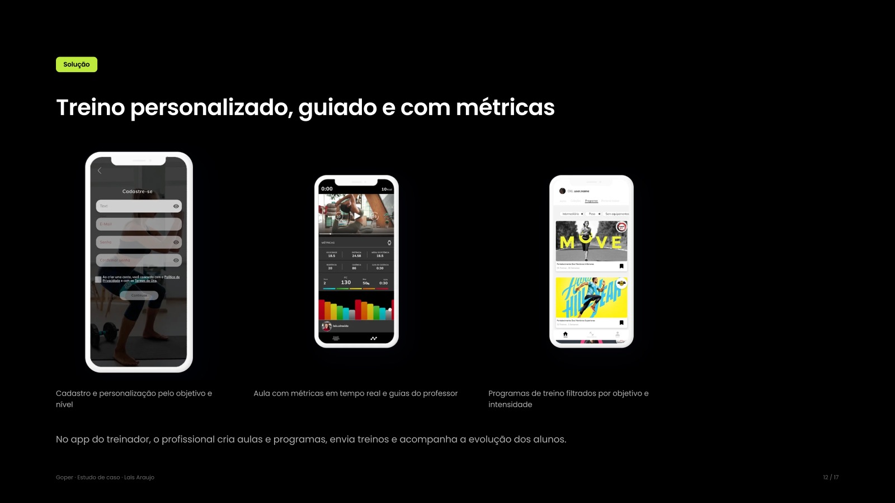
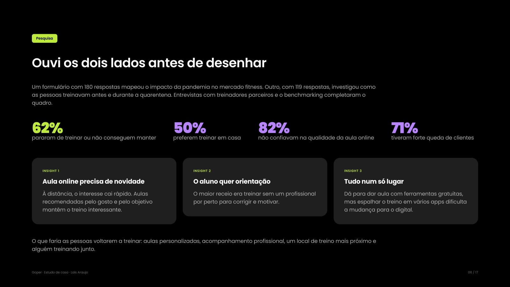
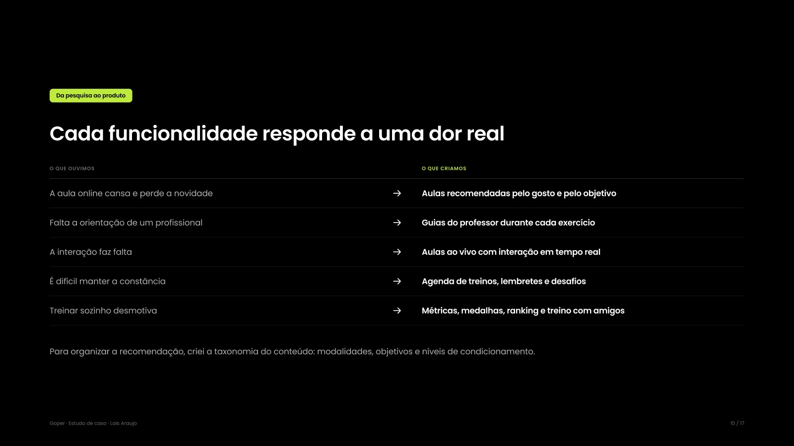

Trendx Brasil · Goper
Goper: a academia que cabe na rotina
Como estruturei o design de um produto fitness do zero, durante a pandemia, e conectei treinadores e alunos numa só plataforma: app, TV e o tablet da bike e da esteira.

01 · Contexto
As academias fecharam, e os personais foram para o WhatsApp
Em 2020, com o isolamento social, as academias perderam alunos e cresceu a procura por treino online: o Brasil foi o 3º país com mais adeptos de treinos online e apps fitness. Os personal trainers passaram a dar aula por live e videochamada, de forma improvisada.
Meu papel: fui a primeira designer da empresa. Estruturei o processo de UX e desenhei o produto do conceito ao handoff.
02 · Problema
Conectar academia, personal e aluno num só produto
- Treinador: perdeu alunos e improvisava as aulas. Precisava de uma ferramenta própria para dar aula, acompanhar a evolução dos alunos e conquistar novos.
- Aluno: queria treinar, mas sozinho desanimava. Não sabia montar o próprio treino, tinha receio de treinar sem um profissional e a ansiedade da pandemia tirava a motivação.
03 · Processo
Um processo de design montado do zero
Como a empresa ainda não tinha área de design, montei o processo em duplo diamante e fui apresentando cada etapa para o time.
- Entender: pesquisa de mercado, dois formulários (180 e 119 respostas), entrevistas com treinadores parceiros e benchmarking.
- Definir: problema, personas (o treinador Alan e a aluna Marina), jornada, backlog, MVP e roadmap.
- Idear: cocriação, sessões de crítica, a dinâmica “É, não é, faz, não faz”, sitemap, fluxos e taxonomia do conteúdo.
- Implementar: styleguide, protótipo em alta fidelidade, testes de usabilidade e adaptação para tablet.

04 · Solução
Cada funcionalidade responde a uma dor real
Decisão-chave: num produto com dois lados, sem conteúdo não há aluno. Por isso o MVP começou pelo app do treinador, uma vitrine para o profissional se divulgar, captar alunos e criar e enviar treinos. Com a oferta garantida, o app do aluno veio em seguida.
- Aula online cansa → aulas recomendadas pelo gosto e pelo objetivo
- Falta orientação → guias do professor durante cada exercício
- A interação faz falta → aulas ao vivo com interação em tempo real
- É difícil manter a constância → agenda, lembretes e desafios
- Treinar sozinho desmotiva → métricas, medalhas, ranking e treino com amigos
Antes do desenvolvimento, testei os protótipos com usuários. Três dos quatro principais achados se encaixavam em heurísticas de usabilidade (status do sistema, prevenção de erros e interface mais limpa). Depois, adaptei o layout para o tablet da bike e da esteira, com frequência cardíaca, cadência, potência, velocidade e distância sempre visíveis. Também participei da criação do nome e da marca: “go” (vai) + “per”, de pessoa e de personal.

05 · Resultados
Lançado e ativo
O Goper foi lançado e segue ativo, com app, loja e aluguel de equipamentos. Para medir se o produto cumpre o que prometeu, eu acompanharia hoje:
- Métrica norte: treinos concluídos por aluno ativo, por semana
- Oferta: treinadores que publicam toda semana e tempo para criar e enviar um treino
- Engajamento: primeiro treino concluído em até 7 dias e semanas seguidas com treino
- Receita: conversão do teste grátis para o plano pago e assinaturas com equipamento
Veja o produto
06 · Aprendizados
O que levo deste projeto
- Design também se vende. Numa empresa sem área de UX, mostrar o processo com protótipos e testes foi o que abriu espaço para o design.
- Em produtos com dois lados, a ordem importa. Começar pela oferta garante conteúdo para quem chega.
- Métricas nascem junto com o produto. Hoje eu definiria os indicadores de sucesso antes do lançamento.
Próximo projeto
Burger King · Totem
Trendx Brasil · Goper
Goper: the gym that fits your routine
How I structured design for a fitness product from scratch, during the pandemic, and connected trainers and students in one platform: app, TV and the bike and treadmill tablet.
01 · Context
Gyms closed, and trainers moved to WhatsApp
In 2020, with social isolation, gyms lost members and demand for online training grew: Brazil was the 3rd country with the most online training and fitness app users. Personal trainers started teaching through lives and video calls, improvising.
My role: I was the company’s first designer. I set up the UX process and designed the product from concept to handoff.
02 · Problem
Connecting gym, trainer and student in one product
- Trainer: lost students and improvised classes. Needed their own tool to teach, track students’ progress and win new ones.
- Student: wanted to train, but alone lost motivation. Didn’t know how to build a workout, was afraid of training without a professional and pandemic anxiety drained motivation.
03 · Process
A design process built from scratch
Since the company had no design team yet, I set up a double diamond process and presented each stage to the team.
- Discover: market research, two surveys (180 and 119 answers), interviews with partner trainers and benchmarking.
- Define: problem, personas (trainer Alan and student Marina), journey, backlog, MVP and roadmap.
- Ideate: co-creation, critique sessions, the “Is, isn’t, does, doesn’t” exercise, sitemap, flows and content taxonomy.
- Deliver: styleguide, high-fidelity prototype, usability tests and tablet adaptation.
04 · Solution
Every feature answers a real pain
Key decision: in a two-sided product, without content there are no students. So the MVP started with the trainer app, a showcase for the professional to promote themselves, win students and create and send workouts. With supply secured, the student app came next.
- Online classes get tiring → recommended classes by taste and goal
- Lack of guidance → trainer guides during each exercise
- Interaction is missing → live classes with real-time interaction
- Consistency is hard → schedule, reminders and challenges
- Training alone is demotivating → metrics, medals, ranking and training with friends
Before development, I tested the prototypes with users. Three of the four main findings matched usability heuristics (system status, error prevention and a cleaner interface). Then I adapted the layout for the bike and treadmill tablet, with heart rate, cadence, power, speed and distance always visible. I also took part in creating the name and the brand: “go” + “per”, from person and personal trainer.
05 · Results
Launched and live
Goper was launched and is still live, with an app, a store and equipment rental. To measure whether the product delivers on its promise, today I would track:
- North star: workouts completed per active student, per week
- Supply: trainers publishing every week and time to create and send a workout
- Engagement: first workout completed within 7 days and consecutive weeks with workouts
- Revenue: conversion from free trial to paid plan and subscriptions with equipment
See the product
06 · Learnings
What I take from this project
- Design also has to be sold. In a company without UX, showing the process with prototypes and tests is what opened space for design.
- In two-sided products, order matters. Starting with supply guarantees content for whoever arrives.
- Metrics are born with the product. Today I would define success indicators before launch.
Next project
Burger King · Kiosk